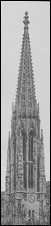

|
| A B C D E F G H I J K L M N O P Q R S T U V W X Y Z |
(From the Anglo-Saxon word spir, meaning "a stalk" or "shoot").
 A tapering construction — in plan conical, pyramidal, octagonal, or hexagonal — crowning a steeple or tower, or surmounting a building, and usually developed from the cornice; often pierced by ornamental openings and, where there were ribs, enriched with crockets. Sometimes an open lantern was interposed between the steeple, tower, or roof and the spire. On the continent the architects aimed to make the steeple and spire one, merging them into each other, while in England they openly confessed it was a separate structure by masking its point of origin behind a plain or pierced parapet, or ornamental battlements. A spire properly belongs to Pointed architecture and hence has never been fully developed except in Gothic buildings. As early as the twelfth century they took on different forms, and almost everywhere, from the thirteenth to the sixteenth century, became the terminating construction of every church steeple, tower, or lantern, and also those of secular buildings, more especially in Germany and France. Their decorative value was very great, more particularly in varying and enriching the sky-line of the buildings which they crowned, and by the numerous variations of forms and variety of types employed. These forms from such simple examples as that surmounting the south tower of Chartres Cathedral to that of Burgos, where the whole structure is an openwork of tracery. In England Norman churches were without spires, but with the coming in of Early English short ones were introduced; Decorated Gothic called for much higher ones, and the Perpendicular still higher. The earlier spires were generally built of timber, and they were always so when the building was roofed with wood.
These early timber spires were, as a rule, not very tall, but later they reached a greater elevation; that which crowned old St. Paul's in London is said to have been 527 feet in height. The most lofty spires now in existence — such as those of Salisbury, Coventry, and Norwich — are all of stone. In Central England there are many, and in fact wherever suitable stone was easily obtainable. In the north of England, however, in Scotland, and in Wales among the mountains the bell-gable takes the place of a spire, no doubt because the large area of the thinly populated parishes made it necessary to keep the bells uncovered, so that they might be more widely heard. The most beautiful examples of existing spires are to be seen at Chartres, Reims, Laon, Freiburg, Ratisbon, cologne, Antwerp, Vienna, Burgos, and Salisbury. On some of these buildings there are several spires, in many instances built at different periods: the south spire of Chartres, culminating in a pinnacle 350 feet above the ground, was erected in 1175, while the north spire, with its apex 380 feet above the ground, was not finished until 1513. The so-called spires of the Renaissance and those built by Sir Christopher Wren are not true spires, but merely steeples terminating in a point.
Above illustration: one spire of the Votivkirche, Vienna — Ferstel
APA citation. (1912). Spire. In The Catholic Encyclopedia. New York: Robert Appleton Company. Retrieved April 26, 2010 from New Advent: http://www.newadvent.org/cathen/14220a.htm
MLA citation. "Spire." The Catholic Encyclopedia. Vol. 14. New York: Robert Appleton Company, 1912. 26 Apr. 2010 <http://www.newadvent.org/cathen/14220a.htm>.
Transcription. This article was transcribed for New Advent by Michael C. Tinkler.
Ecclesiastical approbation. Nihil Obstat. July 1, 1912. Remy Lafort, S.T.D., Censor. Imprimatur. +John Cardinal Farley, Archbishop of New York.
Contact information. The editor of New Advent is Kevin Knight. My email address is webmaster at newadvent.org. (To help fight spam, this address might change occasionally.) Regrettably, I can't reply to every letter, but I greatly appreciate your feedback — especially notifications about typographical errors and inappropriate ads.